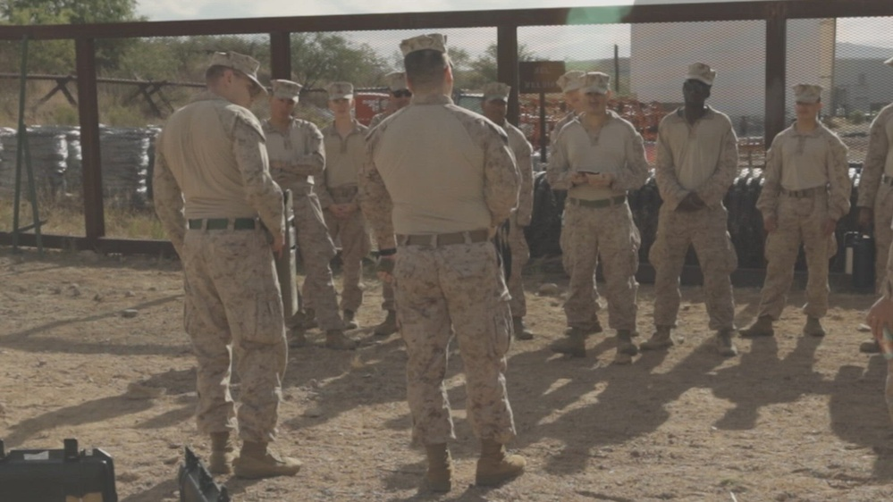

ARGUS is a perception subsystem designed for integration into larger defense and security architectures. This dossier covers the platform classes it mounts on, the mission environments it serves, and the integration path a defense contractor or system integrator follows from first contact to fielded capability.

ARGUS ingests continuous multi-spectral imagery from compatible airborne, perimeter and fixed sensor platforms. The perception layer is sensor-agnostic at the interface: any platform delivering synchronized visible and SWIR feeds can feed the input stage. What ARGUS adds to the platform is the machine-generated picture — detections, persistent tracks, movement signatures and classification — without demanding that the host redesign its sensing suite or its processing backbone.
| PLATFORM CLASS | SENSOR GEOMETRY | INTEGRATION NOTES |
|---|---|---|
| AIRBORNE | Gimbal-mounted visible / SWIR, moving frame | Edge inference for airborne platforms operating where communications bandwidth, latency or visibility constrain conventional processing. Tracks computed onboard; structured outputs downlinked on available links. |
| PERIMETER | Fixed mast and tower installations, persistent coverage | Continuous observation of corridors and restricted areas. Nodes operate autonomously through backhaul outages; outputs sync on restoration. Deployment geometry engineered per site. |
| FIXED-SITE | Multi-sensor campuses: infrastructure, ports, refineries | Multiple nodes publishing one fused track picture across the site. Persistent perimeter sensing for nuclear facilities, refineries, energy infrastructure and other high-consequence sites. |
| MOBILE / EXPEDITIONARY | Vehicle-mounted and rapidly emplaced sensing | Rapid establishment of observation over high-density movement corridors. Packaged for transport, emplacement and level operation by standard unit personnel. |
ARGUS IS NOT LOCKED TO A PROPRIETARY SENSOR LINE. ANY PLATFORM DELIVERING SYNCHRONIZED VISIBLE + SWIR FEEDS INTEGRATES AT THE INPUT STAGE.
Persistent perimeter sensing for nuclear facilities, refineries, energy infrastructure and other high-consequence sites. Machine-generated detection and classification across dense industrial scenes, with the output records feeding existing site-security and command systems.
Automated detection and tracking across dense port environments, restricted areas, logistics yards and maritime facilities. SWIR performance through marine haze and night harbor lighting; track continuity across water glare and vessel occlusion.
Edge-based multi-spectral perception for airborne platforms operating where communications bandwidth, latency or visibility constrain conventional processing. The perception layer flies with the sensor — it does not wait on a link to the ground.
Machine-assisted detection and tracking in darkness, smoke, obscured terrain and other low-visibility environments. Kinematic signatures find moving persons where visual scanning cannot; persistent tracks hold the find through terrain and canopy.
Persistent observation of high-density movement corridors and restricted areas using machine-generated detection and classification. The mission profile Aranruth proves hardest at the basin: adversarial movement, deliberate evasion, terrain and weather working against the sensor.
A perception subsystem designed for integration into larger defense and security architectures requiring persistent machine-generated sensing. For integrators, ARGUS is a capability block — not a product they must bend their architecture around.
Intake. Integration conversations start at the program level through the access channel: sensing environment, platform, integration requirement and program stage. Nothing classified through open channels — requirements are discussed at the capability level first.
Technical demonstration. ARGUS is available for evaluation by qualified defense contractors, system integrators, security organizations and critical-infrastructure operators. Demonstrations run at the Aranruth proving ground with pipeline instrumentation: stage-level timing, detection counts, track-continuity metrics and degradation-event logs — integrators verify behavior against their own requirements, not a datasheet's claims.
Pilot. A bounded deployment on the integrator's platform and site. The perception layer mounts to the existing sensor suite; outputs publish into the integrator's mission system through its own consumption path. Pilot serials include failure reports — what the system missed, why, and what changed in the next build.
Fielding. Full integration with training serials for the operators who inherit the capability, escalation support through Aranruth field-systems engineers, and basin re-certification on every major model change. Nothing fields without surviving the proving ground.
For system integrators and defense contractors, ARGUS provides a perception layer that can be incorporated into larger platforms and mission systems without requiring the entire sensing architecture to be redesigned around centralized processing. The integration surface is deliberately narrow: synchronized visible + SWIR feeds in, structured track / position / classification records out.
ARGUS is not positioned as a conventional surveillance application. It is a machine-vision capability designed around the sensor, the edge compute environment and the mission architecture around it — a subsystem that makes the host platform more capable without making it more dependent.
Integration discussion is direct with the program office. No channel partners, no resellers: the engineers who own the perception stack are the ones who answer the technical questions. Start through the access page.